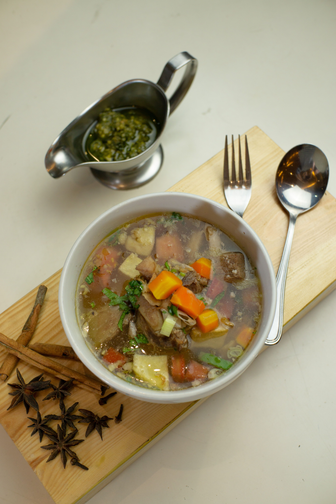

A sour and savory Filipino soup made with pork and tamarind broth.

Ingredients
- 1 kg pork ribs
- 1 pack sinigang mix
- 2 tomatoes, quartered
- 1 onion, quartered
- 1 bunch kangkong
- 1 radish, sliced
- Fish sauce, to taste
Steps
- Boil pork with onion and tomatoes in 8 cups of water.
- Simmer for 45 minutes until the pork is tender.
- Add radish and sinigang mix, then cook for 10 minutes.
- Add kangkong and season with fish sauce.